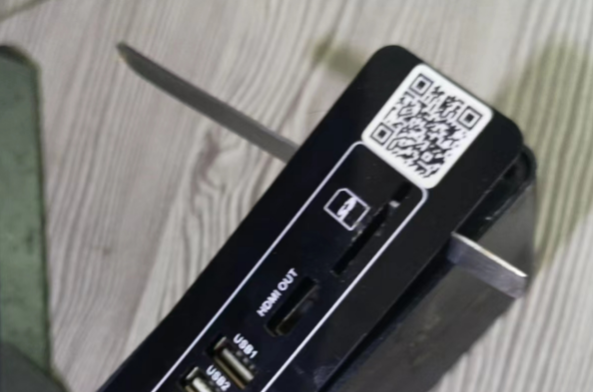
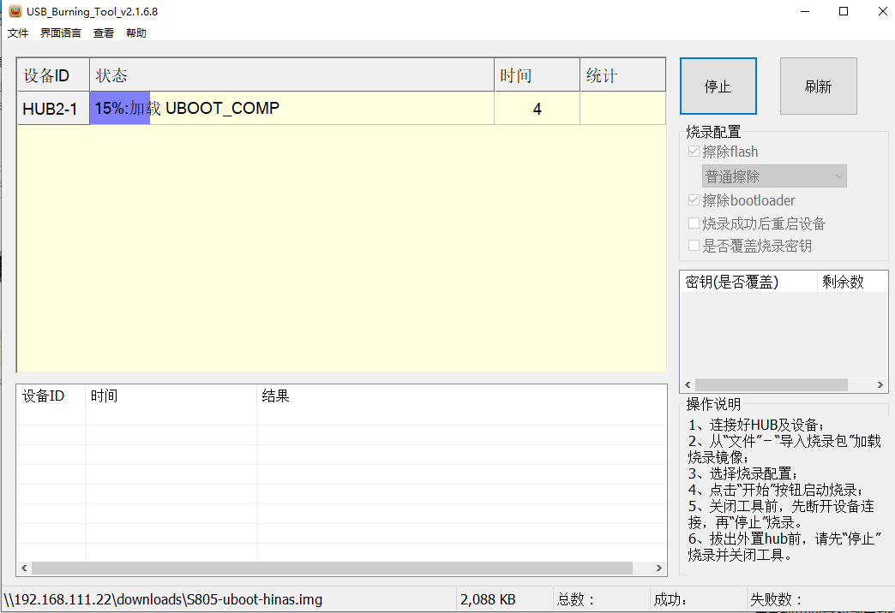

一、准备工作（工具）
准备工具
1. 准备一个 U 盘，建议 8G-64G 之内的U盘
下载专用格式化软件，对 U 盘进行格式化，取回 U 盘全部空间 : USB_format.exe
2. 准备一根双公头 USB 连接线

3. 将盒子拆解出主板：

拆解外壳技巧：
先热用吹风机把背后的pvc贴片吹软，然后用刀具小心撬开。
4. 准备两个工具软件 (下载和安装好)：
晶晨烧录工具 USB_Burning_Tool.exe
USB 镜像烧写工具 balenaEtcher.exe或者 官网地址
5. 下载好作者开发的海纳思固件：
U-BOOT底包 S805-uboot-hinas.img 2M
U 盘镜像固件 Ubuntu_hinas_s805_armhf_5.15.79.img.zip 726M 下载后解压
二、刷入 U-boot 底包
1. 找到主板短接点：(不同板子请自行百度短接位置)

2. 双公头 usb 连接线一头接电脑，一头接板子2号口（靠近 HDMI 的一边）

3. 打开 USB_Burning_Tool 软件工具，导入 S805-uboot-hinas.img 底包
4. 短接住-->打开盒子电源-->显示已连接-->放开短接-->点击 “开始” 按钮

5. 最后，拔掉双公头连接线，关闭软件。至此，底包刷入完成。
提示：这个动作是一次性的，之后再也不需要刷入底包了。可以装好盖子盒子了。
三、烧写 U 盘 镜像
1. 打开balenaEtcher工具，插入前面准备好的 U 盘到电脑
注意：软件显示 U 盘成功写完镜像后，务必等待10秒再拔出 U 盘。（知道啥叫作缓存吧）
2. 把 U 盘插到 1 号口（靠近网口的），接上网线到路由器，重新打开电源

3. 等待 2-3 分钟，首次启动完毕，即可到路由器查找自动分配的 IP，
用 ssh 客户端登录这个 IP ，即可看到终端安装界面。
ssh 端口 22，用户名 root 默认初始密码 ecoo1234

最后，恭喜您拥有一台千兆的家用 linux 服务器系统 ！
我是小盒子，也是大世界！
海纳思系统，绝对值得拥有！
如有疑问，请到社区 bbs.histb.com发帖求助。
常见问题解答
1. U 盘不是标准的，造成盒子主板无法识别。
2. 同一局域网下多台同款盒子在运行，造成 MAC 地址冲突。
使用请看实例图，e酷网www.ecoo.top技术，个人自由免费使用，禁止商用！禁止售卖盈利！